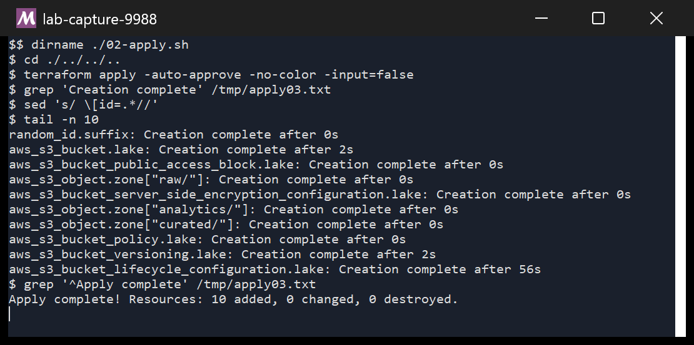
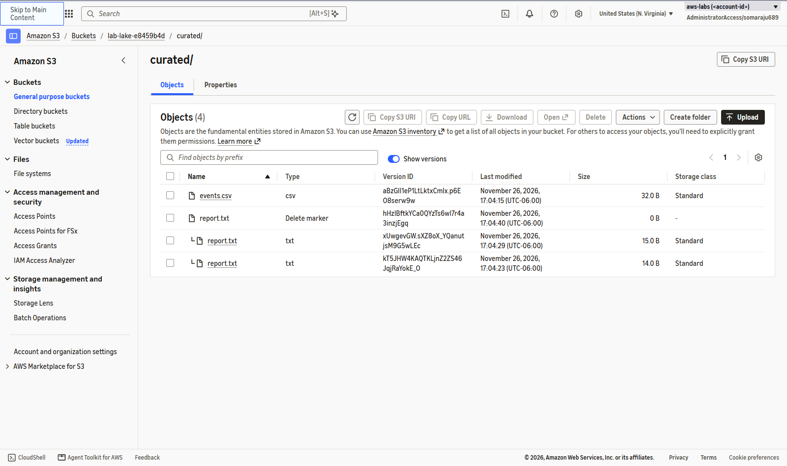
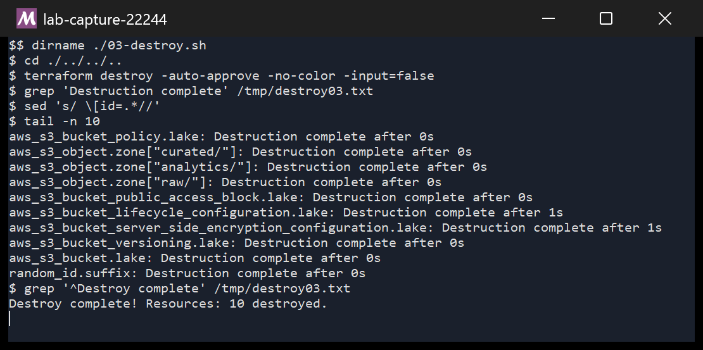
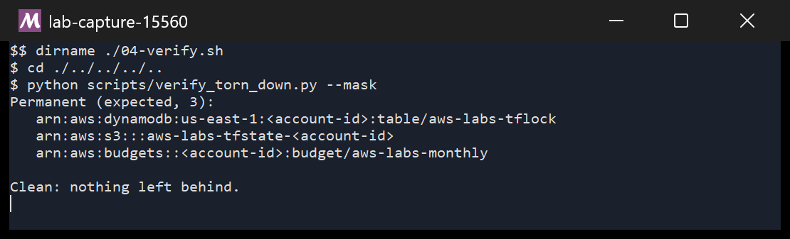

Preethi Somaraju › Writing › AWS data engineering labs › Lab 03
Lab 03 — S3 as a data lake: a layout you cannot violate
Last week two roles were given different reach into three zones of a data lake, and the boundary between them was tested by trying to cross it. This week the same zones become something the storage itself enforces — and the lab turns up 5 MiB of storage that was being paid for and that no listing would show.
A data lake is just a very large folder in the cloud where a company keeps its data. It is usually split into sections: one for data exactly as it arrived, one for the cleaned-up version, one for the results of people’s queries.
Normally those sections are a convention — everyone agrees to put things in the right place. This lab makes the storage refuse the wrong place, sets rules for how old data ages out, and then goes looking for anything the bill is charging for that nobody can see.
- S3
- Amazon’s file storage. A bucket is a
named container; a prefix is the folder-like start of a file
name, such as
raw/. - Bucket policy
- Rules attached to the storage itself, rather than to a person. They apply to everyone, including the administrator who wrote them.
- Lifecycle rule
- An instruction like “after 90 days, move this to cheaper storage” or “after 30 days, delete it”, carried out automatically.
- Versioning
- Keeping the previous copy whenever a file is overwritten, so a mistake can be undone.
- Multipart upload
- How large files are sent: in pieces, which are assembled into the finished file at the end.
- Terraform
- A tool that builds cloud infrastructure from a written description, so the same setup can be rebuilt or destroyed on demand.
Moving the labs out of the management account
The first two labs ran in the account that owns the AWS organization, because it was the only account there was. That is the wrong place for them. The organization’s own guardrails — Service Control Policies — do not apply to the management account, so nothing running there can be contained by them, and lab spending sits in the same place as the billing for everything else.
So this week started by creating a separate aws-labs
account inside the organization. Every lab from here runs there. The
management account keeps the organization, the billing and an account-wide
budget, and holds no lab resources at all.
A new account inside an organization does not come with a fresh Free Tier — the allowance is shared across the whole organization. What separation buys is containment and a clean answer to “what did the labs cost?”, not more free usage.
The design

| Zone | Rule | Why |
|---|---|---|
raw/ | cheaper storage at 30 days, cold storage at 90 | Data as it arrived; read rarely, kept for reprocessing |
curated/ | old versions deleted after 90 days | The current version stays fast; history is for recovery |
analytics/ | objects deleted after 30 days | Query results can always be produced again |
| everything | unfinished uploads cancelled after 7 days | See below — this is the one that matters |
One decision there is worth stating plainly. raw/ moves to
Glacier Instant Retrieval at 90 days, not to Deep Archive. Deep Archive is
roughly four times cheaper and cannot be read at all without a restore
that takes hours. For data whose whole purpose is to be reprocessed later,
that is not a saving, it is a trap:
$ aws s3api get-object --key raw/dt=2026-11-26/cold.csv cold.csv
An error occurred (InvalidObjectState) when calling the GetObject operation:
The operation is not valid for the object's storage class
StorageClass: DEEP_ARCHIVEThat is what a reprocessing job would hit, three months after somebody optimised the storage bill.
Building it



Making the layout real
The bucket refuses any write outside the three zones:
statement {
sid = "DenyWritesOutsideZones"
effect = "Deny"
actions = ["s3:PutObject"]
not_resources = local.zone_arns
}$ aws s3api put-object --bucket lab-lake-e8459b4d --key scratch/oops.csv ...
An error occurred (AccessDenied) when calling the PutObject operation:
... is not authorized to perform: s3:PutObject on resource:
"arn:aws:s3:::lab-lake-e8459b4d/scratch/oops.csv"
with an explicit deny in a resource-based policyRead the last line. Every denial in last week’s lab ended in an identity-based policy — a rule about what a particular role may do. This one is resource-based: a rule attached to the bucket. The difference is practical. The first is removed by editing the role. The second is not, and it applies to the administrator too.
The encryption policy everybody copies, and what it does now
There is a statement that appears in a great many tutorials. It denies any upload that does not explicitly ask for encryption. Applied, it does exactly that — a plain upload gets refused.
Here is the problem. This is an object uploaded by a command that asked for nothing at all:
$ aws s3api head-object --key raw/dt=2026-11-26/events.csv \
--query ServerSideEncryption
AES256Since January 2023, S3 encrypts every object at rest whether the caller asks or not. The statement no longer decides whether data is encrypted. It only decides whether clients that did not think to send a header get an error. It is still worth writing a rule here — but about which algorithm is acceptable, which takes two conditions rather than one:
condition {
test = "Null"
variable = "s3:x-amz-server-side-encryption"
values = ["false"] # the header must be present
}
condition {
test = "StringNotEquals"
variable = "s3:x-amz-server-side-encryption"
values = ["AES256"] # and must say AES256
}The first condition is not decoration. In IAM, a “not equals” test against a value that is missing entirely evaluates to true. Without the presence check, this rule would deny everyone who simply did not send the header — reintroducing the bug it was written to remove.
The storage you are paying for that nothing will show you
Large files are uploaded in pieces. If the upload is interrupted, the pieces that did arrive stay where they are, waiting to be assembled.
So: start an upload, send one 5 MiB piece, walk away. Then look for it.
$ aws s3 ls s3://lab-lake-e8459b4d/raw/dt=2026-11-26/
2026-11-26 17:04:05 32 events.csv
$ aws s3api list-multipart-uploads --bucket lab-lake-e8459b4d
| 2026-11-26T23:05:12+00:00 | raw/dt=2026-11-26/big.bin |The 5 MiB is billed as storage. It is in no file listing, in no reported bucket size, in no inventory of objects — because it is not an object yet, only the parts of one. A single command sees it, and it is a command nobody runs.
A pipeline whose uploads fail partway through accumulates these quietly, month after month, while the bucket’s reported size never moves. The bill goes up and the storage appears empty.
The fix is four lines of configuration that cancels unfinished uploads after seven days. It costs nothing and it is the single most worthwhile rule on this bucket.
Deleting does not delete
$ aws s3api get-object --key curated/report.txt out.txt
An error occurred (NoSuchKey) ... The specified key does not exist.The file is not gone. With versioning on, a delete leaves a marker on
top and the data underneath. NoSuchKey means “nothing
current here”, which is a different statement from “no such
object” — and the gap between them is a recovery procedure.
Overwrites behave the same way: the previous version was read back
intact.

Thirteen checks in all, every one passing: writes inside and outside the zones, the encryption rules in both their broken and working forms, a request over plain HTTP, an overwrite, a delete, the abandoned upload, the Deep Archive read, and the lifecycle configuration AWS stored compared against the one that was written.
What went wrong
Before any of this ran, the teardown checker written in week 1 was run against the account. It reported Clean: nothing left behind.
The credentials had expired. Every call it made had failed, every failure had been quietly turned into “nothing found”, and an account it could not see was indistinguishable from an account with nothing in it.
That script exists to be believed when it says a lab left nothing behind, which makes a false “clean” its worst possible failure. It now checks its credentials before anything else and stops with an error rather than a verdict. The clue, in hindsight, was that it reported zero permanent resources when three were known to exist — a check that cannot see what it is certain about is not reporting on anything else either.
$ python scripts/verify_torn_down.py
Cannot verify: Error when retrieving token from sso: Token has expired
Re-authenticate, then run this again. An unverified teardown is not a clean one.Two smaller ones. The first apply screenshot showed
0 added, because the capture tool’s invisible first run
had already built everything — fixed by destroying at the top of the
script. And one test appeared to fail when the whole run simply stopped
early: not a failure at all, but the output being piped into
head, which closed the pipe and killed the script.
Takeaways
A rule attached to the storage outlives a rule attached to a person. Identity policy describes what someone may do; bucket policy describes what the bucket accepts. Only the second survives somebody editing the first.
A “not equals” condition against a missing value is true, which is enough to turn a sensible-looking encryption rule into one that locks out everybody.
The S3 cost that actually bites is not a storage class. It is an upload that never finished: billed, unlisted, invisible to everything that counts objects, and cancelled automatically by one small rule.
And a check that cannot fail loudly is not a check.
Cleanup
$ terraform destroy -auto-approve
Destroy complete! Resources: 10 destroyed.
$ python scripts/verify_torn_down.py
Clean: nothing left behind.

One object in this lab went to Deep Archive, which carries a 180-day minimum billing commitment. On roughly a kilobyte that is a fraction of a cent — but it is the kind of commitment worth knowing about before making it at scale.
Code
Terraform, the test harness, those scripts, and the full write-up: github.com/preethi-somaraju/aws-labs